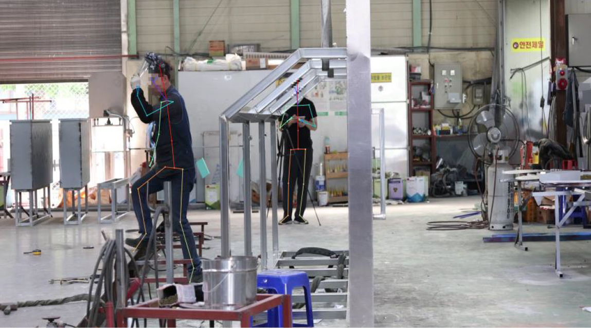

AI영상분석결과
분석결과 - 전체 영상 통계

| 작업부가정보 | 무게 | 빈도/강도 | 추가사항 |
|---|---|---|---|
|
|
|
| 시간 (초) | |||||
|---|---|---|---|---|---|
| 위험수준 | 매우 낮음 | 낮음 | 중간 | 높음 | 매우높음 |
| 조치필요성 | 없음 | 모니터링 | 필요함 | 빠른조치필요 | 즉시조치필요 |
| OWAS | 12 | 12 | 12 | 123 | |
| RULA | 13 | 123 | 12 | 123 | |
| REBA | 123 | 123 | 123 | 121 | 1 |
| 목 | 허리 | 다리 | |||
|---|---|---|---|---|---|
| 자세구분 | 시간(초) | 자세구분 | 시간(초) | 자세구분 | 시간(초) |
| 뒤로 젖힘 | 12 | -20도 이상 뒤로 젖힘 | 12 | 앉은 자세 | 12 |
| 0~10도 굽힘 | 12 | -10~20도 뒤로 젖힘 | 12 | 두 다리를 펴고 섬 | 12 |
| 10~20도 굽힘 | 12 | -10~0도 뒤로 젖힘 | 12 | 한 다리로 섬 | 12 |
| 20도 이상 굽힘 | 12 | 똑바로 | 12 | 두 다리를 구부려 섬 | 12 |
| 비틀림 | 12 | 0~20도 굽힘 | 12 | 무릎을 꿇는 자세 | 12 |
| 옆으로 구부림 | 12 | 20~60도 굽힘 | 12 | 걷기 | 12 |
| - | - | 바로 서서 허리를 옆으로 20도 이상 비틈 | 12 | 다리가 지지됨 | 12 |
| - | - | 상체를 앞으로 굽힌 채 옆으로 비틈 | 12 | 무릎을 30도~60도 굽힘 | 12 |
| - | - | - | - | 무릎을 60도 이상 굽힘 | 12 |
| 어깨 | 팔 | 손목 | |||
| 자세구분 | 시간(초) | 자세구분 | 시간(초) | 자세구분 | 시간(초) |
| -20도 이상 뒤 | 12 | 양 손을 어깨 아래로 내림 | 12 | 15도 이상 들림 | 12 |
| -20도 뒤 ~ 20도 앞 | 12 | 한 손만 어깨 위로 올림 | 12 | 중립 | 12 |
| 20~40도 옆으로 | 12 | 양손을 어깨 위로 올림 | 12 | -15아래 ~ 15도 사이 | 12 |
| 45~90도 앞으로 | 12 | 물건을 들고 있음 | 12 | 15도 이상 꺽임 | 12 |
| 90도 이상 위로 | 12 | 0~60도(위팔 수직선에서) | 12 | 손목이 옆으로 굽혀짐 | 12 |
| 위팔벌어짐 | 12 | 60~100도 | 12 | 중립에서 비틀림 | 12 |
| 어깨들림 | 12 | 100도 이상 | 12 | 운동범위의 끝에서 비틀림 | 12 |
| 팔이 지지되거나 기댐 | 142 | 위팔이 교차 또는 몸통을 벗어남 | 12 | - | - |
| - | - | - | - | 무릎을 60도 이상 굽힘 | 12 |